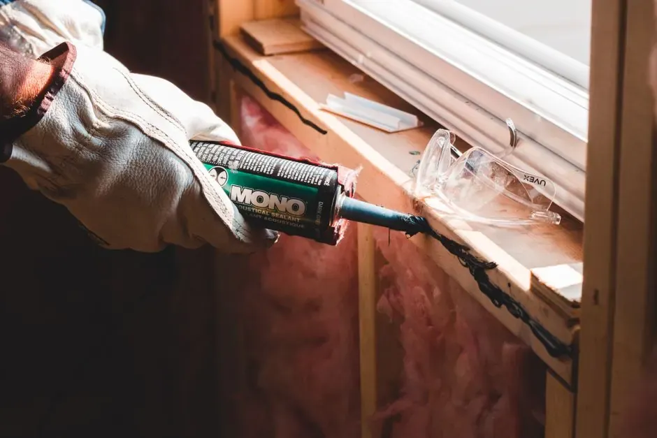
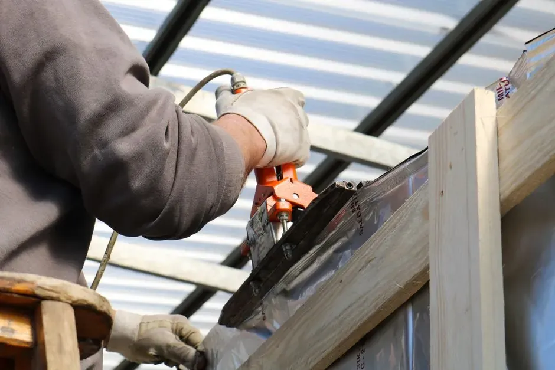
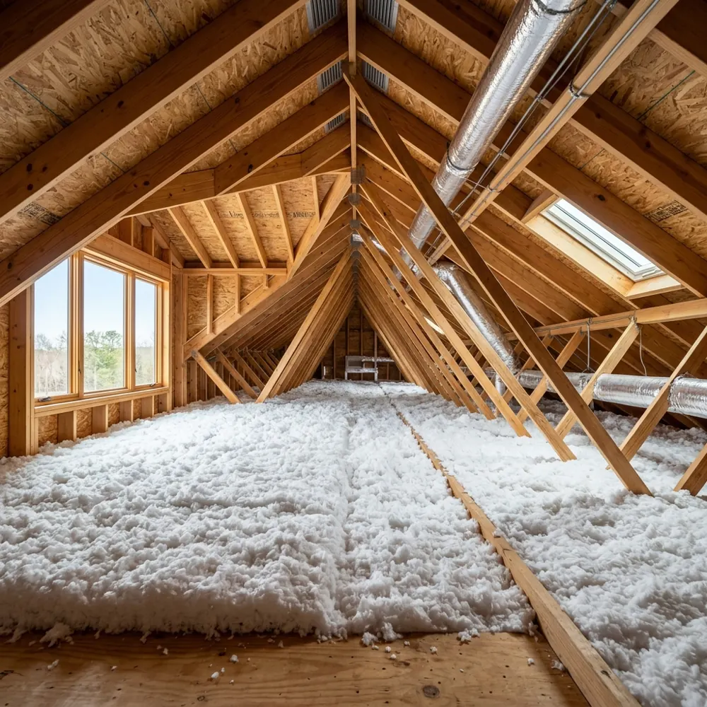

What a square foot means
Houston foam is priced by the roof deck area sprayed, not the attic floor area below it. A roof deck, including the gables, covers about 27 percent more area than the attic floor below it.
When your upstairs stays hot and your AC runs all day, hot attic air leaking down is often part of the problem. Spray foam seals those leaks, so less of that heat reaches your rooms. We measure your attic first, then quote in writing.
Most jobs start within the same week.
5.0 stars from 6 Google reviews. Based in Spring Branch, Houston, TX 77080.
Spray foam for a Houston attic costs $2.00 to $4.50 per sq ft of surface sprayed.
| Area sprayed | Example price |
|---|---|
| 500 sq ft | $1,000 to $2,250 |
| 1,000 sq ft | $2,000 to $4,500 |
| 1,500 sq ft | $3,000 to $6,750 |
| 2,000 sq ft | $4,000 to $9,000 |
Houston foam is priced by the roof deck area sprayed, not the attic floor area below it. A roof deck, including the gables, covers about 27 percent more area than the attic floor below it.
Air sealing costs $250 to $740 per attic, only if we find leaks, and what you pay for foam depends on attic size and on open or closed cell foam.
Other Houston firms list open cell at $1.83 to $3.25 per sq ft and closed cell at $2.83 to $4.92 per sq ft, by roof deck area. Those listed prices are not ours.
A 20 by 20 garage has 400 sq ft of floor space, and a 24 by 30 garage has 720 sq ft. Floor space alone does not set the price. The price also depends on the ceiling and wall area we spray, the foam we use, and the thickness we spray.
Spray foam is worth it in Houston when air leaks are the problem.
Look for these signs in your home. Your upstairs stays hot while the downstairs feels cool. Your AC runs all day and the house does not cool down. The room over the garage is the hottest room in summer and the coldest room in winter.
A hot upstairs can come from thin insulation. It can also come from duct leaks, poor air flow, or a bad attic vent. We check the attic before we quote foam. If foam is not the fix, we tell you on the walkthrough.
Do not use spray foam over wet wood or over a leak that has not been fixed. Foam can trap moisture and damage the roof. The Building Science Corporation (BA 1312) says roof sheathing and framing must be dry below 18 percent before spray foam goes on, and the roof must be leak free.
For Houston, in Climate Zone 2, ENERGY STAR puts the saving at 9 percent on heating and cooling and 6 percent on total energy. That is for sealing plus insulating together, not spray foam alone.
ENERGY STAR, a program of the U.S. Environmental Protection Agency, gives a national average of 15 percent on heating and cooling costs and 11 percent on total energy costs for sealing plus insulating together. That is a national average, not a Houston saving. We do not promise a saving on your bill.

Choose closed cell foam when the foam sits at the roof deck, on steel, or where space is tight. Choose open cell foam when there is room for a thick layer, the attic can dry, and sound matters more.
Houston is hot and humid, in Climate Zone 2A, so the choice turns on moisture and depth, not on which foam is stronger.
Open cell foam is soft and light. It expands as it is sprayed and fills gaps in old Houston framing. The U.S. Department of Energy lists it at about R 3.6 per inch, and its R value does not change over time.
Open cell foam lets water vapor pass through it. In a Houston attic, we add moisture removal at the roof deck, such as supply air of 50 cubic feet per minute for each 1,000 sq ft of attic area. We check that on the walkthrough.
Closed cell foam is dense. It resists water and acts as a vapor retarder at 1.5 to 2 inches. The U.S. Department of Energy lists it at R 6.5 per inch when new, falling to about R 6.1 per inch as the blowing agent leaves the foam, mostly in the first two years. We size jobs on the aged value.
R 38 is not the Houston target for a new ceiling. Houston follows the 2021 code, which requires R 49 for a new ceiling. ENERGY STAR says add R 38 over 3 to 4 inches of existing insulation.
At R 3.6 per inch, open cell foam needs 10.6 inches to reach R 38. R 49 needs 13.6 inches of open cell foam, or 8.0 inches of aged closed cell foam at R 6.1 per inch. The walkthrough sets your thickness.
In Houston, a typical roofline job is 5.5 to 7 inches of open cell foam, or 3 to 4 inches of closed cell foam, about R 20 to R 25 for open cell foam, and R 18 to R 24 for closed cell foam. That is typical Houston practice.
At the roof deck, we use closed cell foam where moisture cannot escape, because open cell foam there can trap moisture in Zone 2A. We use open cell foam where moisture removal is in place. We check your roof deck, your attic vents, and the wood for damp before we choose the foam.
We look at your attic first, then tell you which foam fits it.

Homeowners in Houston often compare spray foam with blown in insulation. Use blown in insulation when your attic floor is sound, your ducts are sealed, and you want the lower cost job. Use spray foam when air leaks are the main problem, when ducts sit in the attic, or when the attic will be sealed at the roof deck.
Spray foam seals air leaks as it is sprayed. It forms a tight layer on the surface. Blown in fiberglass does not stop air leaks on its own. It fills the attic floor with loose fibers. We seal gaps first when we blow in fiberglass. Foam does the sealing and the insulating in one pass.
Blown in insulation costs $1.00 to $2.50 per sq ft. A spray foam job takes 1 to 3 days, depending on the project. A blown in job takes more than one day. Removal costs $1.00 to $1.50 per sq ft for blown in and fiberglass removal.
Blown in fiberglass is about R 2.5 per inch. Our usual target is R 38, about 15 inches. Foam needs less depth than fibreglass to reach R 38.
Foam stops wet air from leaking in through gaps. Blown in fiberglass does not seal gaps, so wet air can still leak in. We do not spray foam on a wet roof.
Fiberglass absorbs airborne sound better than foam. Owens Corning lists a fiberglass sound batt at STC 49 and foam at STC 41. Foam blocks sound that comes through air leaks. If voices and TV sound are the problem, fiberglass absorbs more sound. If noise comes through gaps, foam blocks more of it by sealing the gaps.
We check your attic and tell you which one fits it.
We are based in Spring Branch, Houston, and spray foam in attics, walls, and garages. Spring Branch is bounded by Tanner Road and Hempstead Road to the north, Beltway 8 to the west, Interstate 10 to the south, and the 610 Loop to the east.

We spray foam on attic floors and on roof decks. An attic floor job keeps the attic vented. A roof deck job seals the attic at the roof line. We tell you which one fits your attic on the walkthrough. Spring Branch West has many 1960s ranch style houses. Those homes often have thin old insulation in the attic.
We sprayed about 6 inches of open cell foam on the roof deck of a Houston home with about 1,500 sq ft of attic. The customer was happy with the work.

We spray foam on walls when the wall is open. For walls that are already closed, we use injection foam. Injection foam goes into each stud cavity through small holes. Then we patch the holes. That work is on our injection foam page. It is not attic spray foam work.
Rim joists leak air where the floor meets the wall. Foam seals that joint. Garages with a bonus room above them leak heat through the garage ceiling. Foam on the garage ceiling and walls cuts that heat. A bonus room over a garage is often the hottest room in the house in summer.
We spray foam in shops, warehouses, and metal buildings. Metal buildings need closed cell foam in most cases. Closed cell foam resists water and stops condensation on cold steel. We measure the building and give the price in writing.
We tell you where foam fits in your home.

Houston averages 111.3 days a year at or above 90 degrees Fahrenheit. Those are the 1991 to 2020 normals for Houston Intercontinental Airport, from the National Oceanic and Atmospheric Administration and the National Weather Service. Hot attic air leaks down into the rooms below. Your AC runs all day to fight that heat.
Foam seals the gaps where hot air leaks in. It seals around pipes, wires, lights, and the attic hatch. It seals the top plates of walls. It seals the rim joists. When air leaks stop, the AC does not have to fight hot attic air all day. The upstairs stays closer in temperature to the downstairs.
Houston air is wet. Closed cell foam resists water. We check the roof for leaks before we spray.
If we spray the roof deck, the attic becomes sealed and unvented, with no outside vents. If we spray the attic floor, the attic stays vented as before. The Pacific Northwest National Laboratory says both vented and unvented attics are allowed. A sealed attic needs a way to remove moisture. We check that on the walkthrough.
Fiberglass batts leave gaps at edges, wires, and pipes. Loose blown in fiberglass fills the floor but does not seal gaps. Foam expands and fills those gaps. It seals the small holes that let hot air and wet air in. That is why foam works well in old homes with many small gaps in the attic floor.
We tell you how foam can help it.

A spray foam job takes 1 to 3 days, depending on the project. Attic size, foam type, prep, and removal change the time. We confirm your timing on the walkthrough.
We go up in the attic and look around. We measure depth in several spots with a tape. We look for wet or stained spots, damaged insulation, and leaks in the roof deck. We look at the ducts, the vents, and the attic hatch. We check the wood for damp. We take photos of what we find.
We clear the attic floor where we need to work. We cover floors and items below the attic hatch. We protect lights and fixtures. We ask you to leave the house during the work. We ask you to take pets with you. The U.S. Environmental Protection Agency says spray foam vapors can exceed work limits during spraying.
We spray the foam in thin passes. It expands and hardens. It seals gaps as it grows. We check thickness as we go. We check for missed spots. We clean up dust and foam bits. We do not leave foam on floors or fixtures. We check the attic hatch seal before we leave.
Stay out until the time we give you in writing has passed. A faint smell can fade in 1 to 3 days on a good job. A strong smell that lasts past 48 to 72 hours can mean a curing problem. Call us if the smell stays strong. We come back and check it.
We confirm your timing on the walkthrough.
Leave during the work. Most makers say stay out at least 24 hours after spraying. We give you your time in writing before we start. Vapors during spraying can irritate eyes and breathing. We ventilate and clean the site before you go back in.
Yes, you can, but a 1,000 sq ft attic at 6 inches deep needs about 6,000 board feet of foam. That is 10 to 30 DIY kits, because one kit covers only 200 to 600 board feet. The 6 inch depth is an example, not a job spec.
No. The Internal Revenue Service says the credit will not be allowed for any property placed in service after December 31, 2025. The credit ended on that date. Check the current tax rules with the Internal Revenue Service. This is federal tax law, not a Houston rule.
Most attic jobs need no permit. Replacing insulation can fall under the City of Houston minor repair permit, Form CE 1059. We tell you on the walkthrough which one applies to your job. The City lists insulation replacement as a minor repair.
Yes, mold can grow on the wood behind spray foam when a roof leak traps moisture there, because foam covers the wood and hides the damp from view. We check the roof and the wood for damp on the walkthrough, and if the wood is wet, we do not spray until the leak is fixed and the wood is dry.
5.0 stars from 6 Google reviews. Here is what Houston homeowners say about our insulation work.
Had the insulation done underneath our home and they did a fantastic job. Great customer service, quick work, and top-notch quality. Highly recommend
I recently had my walls insulated with injection foam by Insulation Contractor Houston, and I couldn't be more pleased with the experience. From the initial consultation to the completion of the project, their team demonstrated professionalism, expertise, and attention to detail.
Great price. Outstanding experience from start to finish! We had our entire home insulated, both walls and attic, and the quality of the work is exceptional. The crew provided top-tier customer service throughout the entire process. Highly recommend them to anyone looking to improve their home's comfort and energy efficiency!
Great Sevice! got whole home insulated, professional and clean work.
Start with a walkthrough. You get a written estimate before any work starts.
Call (832) 291 2738 to book your walkthrough. We call back the same day. Most jobs start within the same week. We are based at 9310 Central Park Vista Ln, Houston, TX 77080, in Spring Branch.
Insulation Contractor Houston